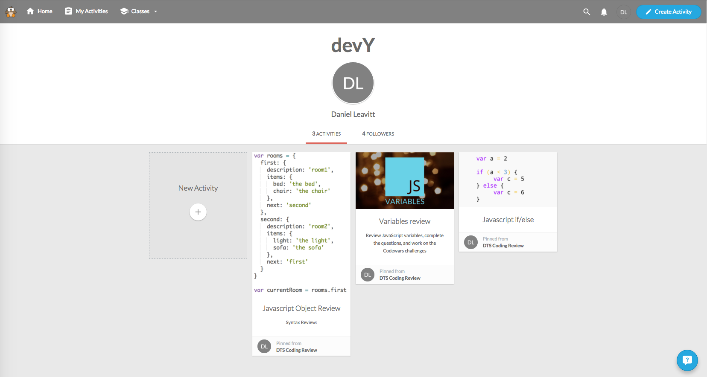

Weo
Weo is an educational platform that makes it easy to create and grade assignments. The devY curriculum employs this to create quizzes and short review exercises.
Authentication:
- For Teachers: Google, Facebook, or E-mail
- For Students: No email required

Getting Started
Check out Weo's how it works page for information on how to get started with your account.
- Create an account
- Create a class
- Add students to class
- Follow the devY board
- Assign the relevant assignment to your class